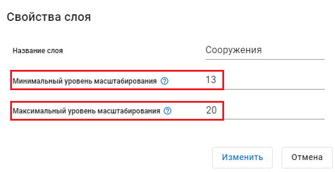

Настройки слоя в проекте
Форма позволяет изменять настройки слоя

Настройка видимости позволяет управлять отображением слоя на карте в пределах заданных масштабов.
Если в графе минимум поставить значение 13 — объекты на карте скроются при масштабе 1:45 000 и меньше.
Если в графе максимум поставить значение 20 — объекты на карте скроются при масштабе 1:300 и крупнее.